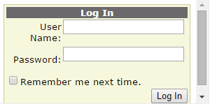
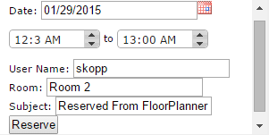
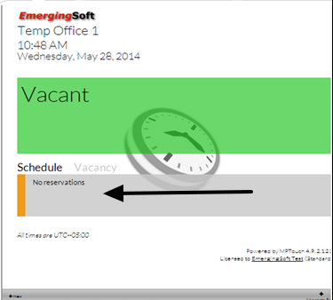
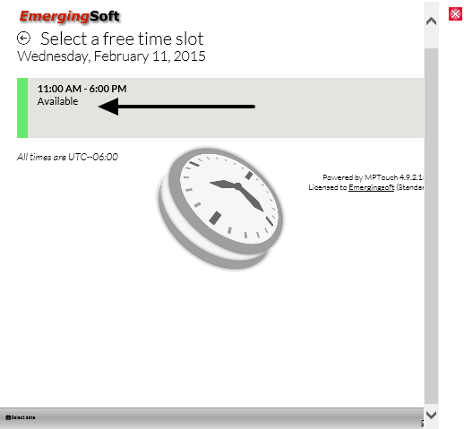
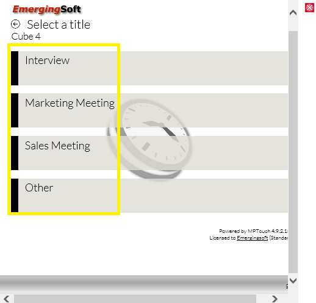
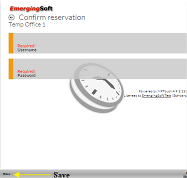
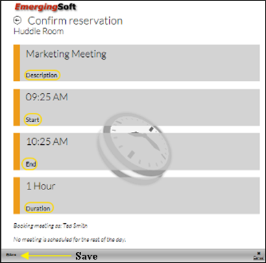

Create Reservation
Using Forms Authentication
- Enter your Windows log in credentials.

- Use calendar to change date of reservation.
- Use arrows to edit time of reservation.

- Select Reserve.
Using MeetingPlannerTouch
- Select an Available room. Once a room is selected, the user is automatically taken to the MeetingPlannerTouch (MPTouch) screen.
- Select No Reservations from the Vacant Schedule window.

- Select Available from Select a Free Time Slot window. FloorPlanner defaults and displays room availability for current day.

- Select a description of the type of meeting from Select a Title window.

- Enter Username from Confirm Reservation window. MP credentials (e.g., Ted.Smith).
- Enter Password from Confirm Reservation window.
MP Credentials

- Select Return or Save.
- Verify the following fields from the Confirm Reservation window:
- Description—edit by selecting Descriptionfield. Enter desired description.
- Start—edit by selecting Start field. Use +/- to adjust start time. Set start time. If user accepts default start time, FloorPlanner automatically reserves meeting room within the next 5 minute increment from the current time.
- End—edit by selecting End field. Use +/- to adjust end time. Set end time.
- Duration—edit by selecting Duration field.
- Select Save. The room is reserved in MP unless there is no activity or Save is not selected within the allotted time. If MPTouch “times-out” the reservation is not created.
- Select X to exit out of the reservation.

NOTE: All meetings and updates created in FloorPlanner synchronize with MeetingPlanner software.